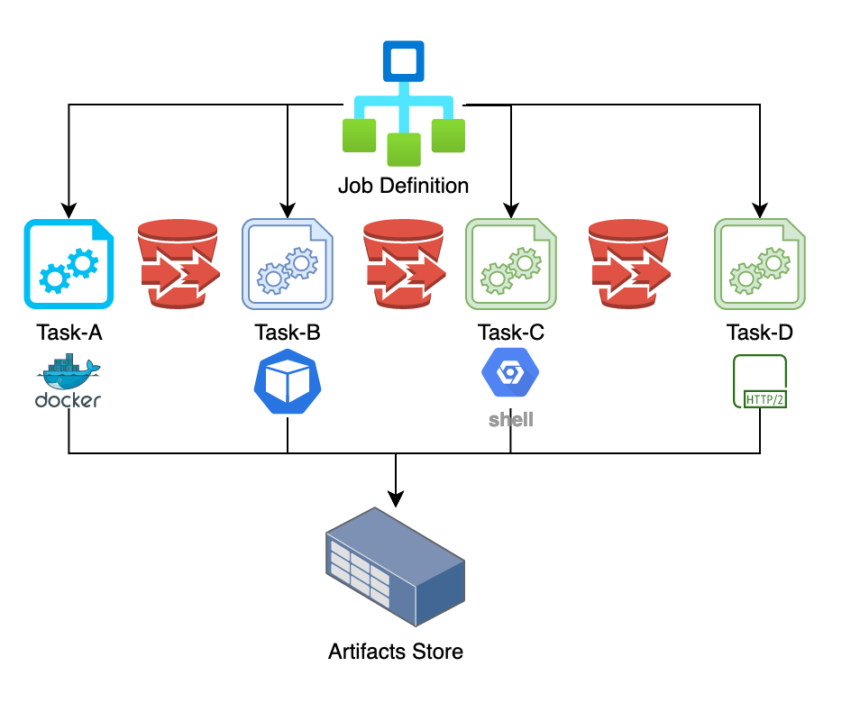

Following is a high level physical architecture of the Formicary:
The major layers of physical architecture includes:
The Dashboard UI provides following functionality:
The queen server schedules and orchestrates jobs for execution. It also provides API for following functionality:
The ant workers registers themselves with the queen server and receives work for tasks. They use messaging queues for communication with the server and provide following functionality:
The formicary uses relational database to persist job requests, definitions, resources, error-codes, configuration and other data.
The formicary uses object-store to persist artifacts generated by the tasks, created by image cache or uploaded by the users.
Following diagram shows internals of queen server and ant workers: 
The major components of the architecture includes:
The resource manager registers the ant workers and keeps track of available resources for jobs processing. The ant workers continuously update resource manager with their capacity and load so that resource manager can determine how many jobs can be concurrently running without exceeding workers' capacity.
The job scheduler queries pending jobs that are waiting for execution and uses resource manager to check if a job can be scheduled for execution. If available resources are available, it sends a remote message to Job-Launcher for execution.
Note: The formicary supports multiple instances of the servers where the scheduler runs on the leader node but other servers run job-launcher/executor for job execution and orchestration.
The job launcher listens for incoming request for job execution and launches execution of a job using Job-Supervisor, which monitors the job execution.
The job supervisor starts a job asynchronously and orchestrates execution of the job. It executes each task using Task-Supervisor and then chooses next task based on the status/exit-code of completed task.
The task supervisor executes a task by sending a remote message to the ant worker that supports the task-method and then waits for the reply message. The task-supervisor receives the result and saves the results in the database.
An ant worker registers with the queen-server for methods/tags that it supports and then listens for incoming requests. It then executes each request asynchronously using executor methods defined by the task and sends back the results. The ant worker downloads dependent artifacts before task execution and upload the artifacts at the end of task. It also manages external containers such as Docker and Kubernetes and manages their lifecycle. The ant worker updates the queen servers with their capacity and load so that server does not send excessive work. Note: You can spawn any number of ant workers that can load balance the work to be performed.
An executor abstracts the runtime environment for execution a task. The formicary uses method to define the type of executor. Following executor methods are supported: | Executor | Method | | :----------: | :-----------: | | Kubernetes Pods | KUBERNETES | | Docker containers | DOCKER | | Shell | SHELL | | HTTP (GET POST, PUT, DELETE) | HTTP_GET HTTP_POST_FORM HTTP_POST_JSON HTTP_PUT_FORM HTTP_PUT_JSON HTTP_DELETE | | Fork/Await | JOB_FORK, JOB_FORK_AWAIT | | Artifact/Expiration | EXPIRE_ARTIFACTS |

Following are fundamental concepts in formicary:
A job represents a directed acyclic graph (DAG) of tasks that are executed where each subsequent task is determined by completion status of prior task. The job definition defines dependency of tasks for executing the workflow. The formicary uses YAML configuration to define job and task definitions.
A task represents a unit of work that is executed by an executor. The job definition defines tasks and the relationship between the tasks in YAML configuration.
See Definition Options for more details on job and task configuration.
Once a job is defined, a user can submit a request to schedule a job, which is stored in the database as PENDING state. The job scheduler then launches the job based on available resources and changes job's state to READY. Note: A user can submit a job with schedule date in future so that it's not immediately executed. A job definition may also define a cron property that automatically creates job requests at scheduled time for job execution.
A job-execution represents an instance of job when a job is started by the job-launcher. The job-launcher saves this instance in the database as well and then hands-off the job to job-supervisor for execution and changes the state of job request and execution to EXECUTING. The job supervisor orchestrates the job execution and changes the state of job request and execution to COMPLETED or FAILED state at the end of execution. The formicary fires Job lifecycle events to update these changes of state that can be listened by UI or API clients.
A task-execution represents an instance of task when a task is started by the task supervisor. The task supervisor saves task instance in the database and builds a task request that is sent to remote ant worker. The task supervisor waits for the response and then updates the database. The task execution ends with COMPLETED or FAILED state but it also supports exit-code that can be passed by the worker. The orchestration rules can choose the next task to run based on ending state or exit-code.